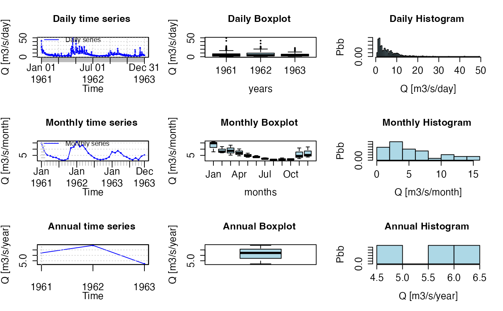
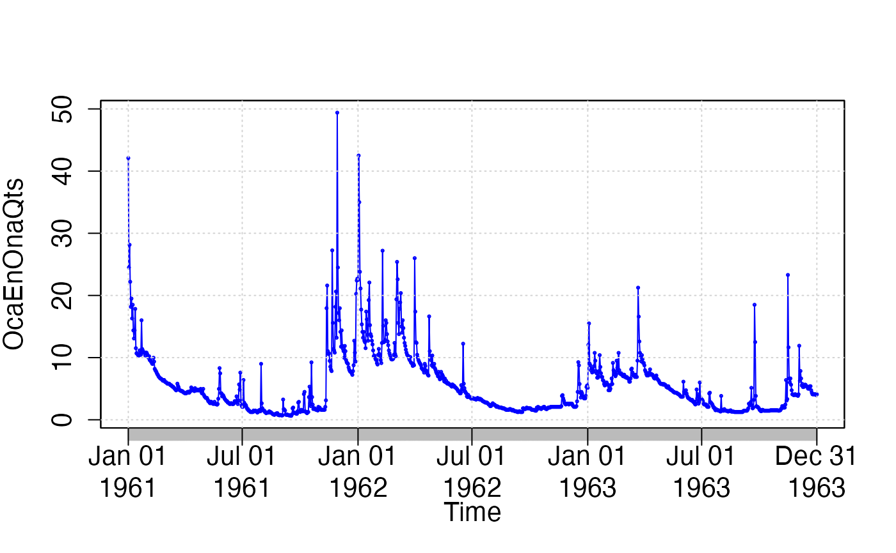
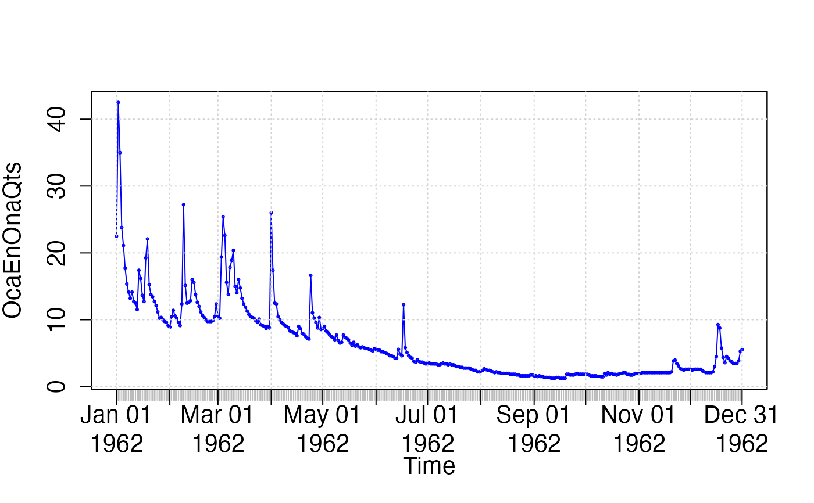

Hydrological time series plotting and extraction.
hydroplot.Rdhydroplot: When x is a zoo object it plots (a maximum of) 9 graphs (lines plot, boxplots and/or histograms) of the daily, monthly, annual and/or seasonal time series.
sname2plot: When x is a data frame whose columns contain the time series of several gauging stations, it takes the name of one gauging station and plots the graphs described above.
Usage
hydroplot(x, ...)
sname2plot(x, ...)
# Default S3 method
hydroplot(x, FUN, na.rm=TRUE, ptype="ts+boxplot+hist", pfreq="dma",
var.type, var.unit="units", main=NULL, xlab="Time", ylab,
win.len1=0, win.len2=0, tick.tstep="auto", lab.tstep="auto",
lab.fmt=NULL, cex=0.3, cex.main=1.3, cex.lab=1.3, cex.axis=1.3,
col=c("blue", "lightblue", "lightblue"),
from=start(x), to=end(x), dates=1, date.fmt= "%Y-%m-%d", tz=NULL,
stype="default", season.names=c("Winter", "Spring", "Summer", "Autumn"),
h=NULL, ...)
# S3 method for class 'zoo'
hydroplot(x, FUN, na.rm=TRUE, ptype="ts+boxplot+hist", pfreq="dma",
var.type, var.unit="units", main=NULL, xlab="Time", ylab,
win.len1=0, win.len2=0, tick.tstep="auto", lab.tstep="auto",
lab.fmt=NULL, cex=0.3, cex.main=1.3, cex.lab=1.3, cex.axis=1.3,
col=c("blue", "lightblue", "lightblue"),
from=start(x), to=end(x), dates=1, date.fmt= "%Y-%m-%d", tz=NULL,
stype="default", season.names=c("Winter", "Spring", "Summer", "Autumn"),
h=NULL, ...)
# S3 method for class 'data.frame'
hydroplot(x, FUN, na.rm=TRUE, ptype="ts+boxplot+hist", pfreq="dma",
var.type, var.unit="units", main=NULL, xlab="Time", ylab,
win.len1=0, win.len2=0, tick.tstep="auto", lab.tstep="auto",
lab.fmt=NULL, cex=0.3, cex.main=1.3, cex.lab=1.3, cex.axis=1.3,
col=c("blue", "lightblue", "lightblue"),
from=start(x), to=end(x), dates=1, date.fmt= "%Y-%m-%d", tz=NULL,
stype="default", season.names=c("Winter", "Spring", "Summer", "Autumn"),
h=NULL, ...)
# Default S3 method
sname2plot(x, sname, FUN, na.rm=TRUE, ptype="ts+boxplot+hist",
pfreq="dma", var.type, var.unit="units", main=NULL,
xlab="Time", ylab=NULL, win.len1=0, win.len2=0,
tick.tstep="auto", lab.tstep="auto", lab.fmt=NULL,
cex=0.3, cex.main=1.3, cex.lab=1.3, cex.axis=1.3,
col=c("blue", "lightblue", "lightblue"),
dates=1, date.fmt = "%Y-%m-%d", from=NULL, to=NULL, stype="default",
season.names=c("Winter", "Spring", "Summer", "Autumn"),
h=NULL, ...)
# S3 method for class 'zoo'
sname2plot(x, sname, FUN, na.rm=TRUE, ptype="ts+boxplot+hist",
pfreq="dma", var.type, var.unit="units", main=NULL,
xlab="Time", ylab=NULL, win.len1=0, win.len2=0,
tick.tstep="auto", lab.tstep="auto", lab.fmt=NULL,
cex=0.3, cex.main=1.3, cex.lab=1.3, cex.axis=1.3,
col=c("blue", "lightblue", "lightblue"),
dates=1, date.fmt = "%Y-%m-%d", from=NULL, to=NULL, stype="default",
season.names=c("Winter", "Spring", "Summer", "Autumn"),
h=NULL, ...)
# S3 method for class 'data.frame'
sname2plot(x, sname, FUN, na.rm=TRUE, ptype="ts+boxplot+hist",
pfreq="dma", var.type, var.unit="units", main=NULL,
xlab="Time", ylab=NULL, win.len1=0, win.len2=0,
tick.tstep="auto", lab.tstep="auto", lab.fmt=NULL,
cex=0.3, cex.main=1.3, cex.lab=1.3, cex.axis=1.3,
col=c("blue", "lightblue", "lightblue"),
dates=1, date.fmt = "%Y-%m-%d", from=NULL, to=NULL, stype="default",
season.names=c("Winter", "Spring", "Summer", "Autumn"),
h=NULL, ...)Arguments
- x
zoo, xts or data.frame object, with columns storing the time series of one or more gauging stations.
- sname
ONLY required when
xis a data frame.
Character representing the name of a station, which have to correspond to one column name inx- FUN
ONLY required when
var.typeis missing ANDpfreq != "o".
Function that have to be applied for transforming from daily to monthly or annual time step (e.g., For precipitationFUN=sumand for temperature and flow ts,FUN=mean)- na.rm
Logical. Should missing values be removed before the computations?
- ptype
Character indicating the type of plot that will be plotted. Valid values are:
-) ts => only time series
-) ts+boxplot => only time series + boxplot
-) ts+hist => only time series + histogram
-) ts+boxplot+hist => time series + boxplot + histogram- pfreq
Character indicating how many plots are desired by the user. Valid values are:
-) dma : Daily, Monthly and Annual values are plotted
-) dm : Daily and Monthly values are plotted
-) ma : Monthly and Annual values are plotted
-) o : Only the original zoo object is plotted, andptypeis changed to ts
-) seasonal: Line and bloxplots of seasonal time series (seestypeandseason.names). Whenpfreqis seasonal,ptypeis set to ts+boxplot- var.type
ONLY required when
FUNis missing.
character representing the type of variable being plotted. Used for determining the function used for computing the monthly and annual values whenFUNis missing. Valid values are:
-) Precipitation =>FUN=sum
-) Temperature =>FUN=mean
-) Flow =>FUN=mean- var.unit
Character representing the measurement unit of the variable being plotted. ONLY used for labelling the axes (e.g., "mm" for precipitation, "C" for temperature, and "m3/s" for flow.)
- main
Character representing the main title of the plot. If the user do not provide a title, this is created automatically as:
main= paste(var.type, "at", sname, sep=" "),- xlab
A title for the x axis. See
plot.- ylab
A title for the y axis. See
plot.- win.len1
number of days for being used in the computation of the first moving average. A value equal to zero indicates that this moving average is not going to be computed.
- win.len2
number of days for being used in the computation of the second moving average. A value equal to zero indicates that this moving average is not going to be computed.
- tick.tstep
Character indicating the time step that have to be used for putting the ticks on the time axis. Valid values are:
-) days,
-) months,
-) years- lab.tstep
Character indicating the time step that have to be used for putting the labels on the time axis. Valid values are:
-) days,
-) months,
-) years- lab.fmt
Character indicating with the format to be used for the label of the axis. See
formatinas.Date. If not specified, it will try "%Y-%m-%d" whenlab.tstep=="days", "%b" whenlab.tstep=="month", and "%Y" whenlab.tstep=="year".- cex
A numerical value giving the amount by which plotting text and symbols should be magnified relative to the default. (See
par).- cex.main
The magnification to be used for main titles relative to the current setting of
cex(Seepar).- cex.lab
The magnification to be used for x and y labels relative to the current setting of
cex(Seepar).- cex.axis
The magnification to be used for axis annotation relative to the current setting of
cex(Seepar).- col
A character vector with 3 elements, representing the colors to be used for plotting the lines of the ts, the boxplots, and the histograms, respectively.
Whenpfreq="o", only one character element is needed. Seeplot.default).- dates
ONLY required when
xis a data frame. It is a numeric, factor or Date object indicating how to obtain the dates corresponding to thesnamestation.
Ifdatesis a number (default), it indicates the index of the column inxthat stores the dates
Ifdatesis a factor, it is converted into Date class, using the date format specified bydate.fmt
Ifdatesis already of Date class, the code verifies that the number of days indatesbe equal to the number of element inx- date.fmt
Character indicating the format in which the dates are stored in dates, from and to. See
formatinas.Date.
ONLY required whenclass(dates)=="factor"orclass(dates)=="numeric".- tz
character, with the specification of the time zone used for
x,from, andto. System-specific (see time zones), but""is the current time zone, and"GMT"is UTC (Universal Time, Coordinated). SeeSys.timezoneandas.POSIXct.If
tzis NULL (the default), it is automatically set to the time zone used intime(x).If
tzis provided, it forcestime(x)to be in the tome zone specified bytz, without modifying the the values (hours, minutes, seconds, etc).A list of valid time zones can be obtained by calling the base function
OlsonNames().This argument can be used when working with sub-daily zoo objects to force using time zones other than the local time zone for
fromandto. It should be used with caution, being well aware of the time zone of the data. See examples.- from
OPTIONAL, used for extracting a subset of values.
Character indicating the starting date for the values to be extracted. It must be provided in the format specified bydate.fmt.- to
OPTIONAL, used for extracting a subset of values.
Character indicating the ending date for the values to be extracted. It must be provided in the format specified bydate.fmt.- stype
OPTIONAL, only used when
pfreq=seasonal.
character, indicating which weather seasons will be used for computing the output. Possible values are:
-) default => "winter"= DJF = Dec, Jan, Feb; "spring"= MAM = Mar, Apr, May; "summer"= JJA = Jun, Jul, Aug; "autumn"= SON = Sep, Oct, Nov
-) FrenchPolynesia => "winter"= DJFM = Dec, Jan, Feb, Mar; "spring"= AM = Apr, May; "summer"= JJAS = Jun, Jul, Aug, Sep; "autumn"= ON = Oct, Nov- season.names
OPTIONAL, only used when
pfreq=seasonal.
character of length 4 indicating the names of each one of the weather seasons defined bystype.These names are only used for plotting purposes- h
OPTIONAL, only used when
pfreq=seasonal, for plotting horizontal lines in each seasonal plot.
numeric, with 1 or 4 elements, with the value used for plotting an horizontal line in each seasonal plot, in the following order: winter (DJF), spring (MAM), summer (JJA), autumn (SON).- ...
further arguments passed to the
plot.zooandaxisfunctions or from other methods.
Details
Plots of the daily/monthly/annual/seasonal values of the time series given as input.
Depending on the value of pfreq, daily, monthly, annual and/or seasonal time series plots, boxplots and histograms are produced.
Depending on the value of ptype, time series plots, boxplots and/or histograms are produced.
Author
Mauricio Zambrano-Bigiarini, mzb.devel@gmail
Examples
#############
## Loading daily streamflows at the station Oca en Ona (Ebro River basin, Spain) ##
data(OcaEnOnaQts)
## 3 ts, 3 boxplots and 3 histograms
hydroplot(OcaEnOnaQts, FUN=mean, ylab= "Q", var.unit = "m3/s")

## only the original time series
hydroplot(OcaEnOnaQts, pfreq="o")
#> [Note: pfreq='o' => ptype has been changed to 'ts']

## only the year 1962 of the original time series
hydroplot(OcaEnOnaQts, pfreq="o", from="1962-01-01", to="1962-12-31")
#> [Note: pfreq='o' => ptype has been changed to 'ts']

if (FALSE) { # \dontrun{
## seasonal plots
hydroplot(OcaEnOnaQts, pfreq="seasonal", FUN=mean, stype="default")
## custom season names (let's assume to be in the Southern Hemisphere)
hydroplot(OcaEnOnaQts, pfreq="seasonal", FUN=mean,
stype="default", season.names=c("Summer","Autumn", "Winter","Spring"))
#############
## Loading the monthly time series of precipitation within the Ebro River basin.
data(EbroPPtsMonthly)
op <- par(mar=c(5.1, 4.1, 4.1, 2.1))
on.exit(par(op))
## Plotting seasonal precipitation at station "P9001"
sname2plot(EbroPPtsMonthly, sname="P9001", FUN=sum, dates=1, pfreq="seasonal",
stype="default")
## Plotting the monthly and annual values of precipitation at station "P9001",
## stored in 'EbroPPtsMonthly'.
sname2plot(EbroPPtsMonthly, sname="P9001", var.type="Precipitation", dates=1,
pfreq="ma")
} # }